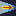

Actions¶
Whenever something happens, what happens, are actions!
Actions are usually not alone, the is usually some list that has actions in a certain order to be executed.
How they work¶
When you are offered to list actions, it means something happened, perhaps the player interacted with a Chara or an Event (“clicked”), perhaps he used an item, or something else. The list of actions is a recipe of what will happen.
Clicking Add Action with no action selected will insert the new action after the current list of actions. If any action is selected, clicking Add Action will insert the new action above the selected action.
Actions are read from top to bottom, they are then placed in a FIFO buffer. The IF action can interact with this buffer, which will change execution flow.
Available Actions¶
showText¶
Parameter: “text”

showText presents a text to the player and blocks, waiting for him to interact. Currently it supports text wrapping and shows a word per time, and plays a small noise for each word.
This is a very important part that can be a lot more complex than it seems, like supporting multiple sounds, characters for pausing, auto skipping text and all, which can give each conversation bigger depth. Right now, though, I have no idea how to implement everything in a nice way.
 alert¶
alert¶
Parameter: “text”

alert is a way to show quick texts, that doesn’t require the player to interact.
 teleport¶
teleport¶
Parameter:”positionx”, “positiony”, “level”
teleport enables moving in a single frame the player from anywhere in the screen to a defined position at a defined level and it’s usually meant to be used in doors in a dungeon or town.
teleportInPlace¶
Parameter: “level”
teleportInPlace enables moving in a single frame the player from a map to another map, preserving the player exact position.


 changeTile¶
changeTile¶
Parameter:”tileType”,”layer”,”colision”,”event”,[“positionx”,”positiony”,”level”]/[“current”]
changeTile can change a tile from a type, to any other type and also change that tile event mark and remove or add colision. It can also target a specific position in a level or just the current tile that contains the event. It’s a very powerful action and adds a lot of possibilities.
changeAllTiles¶
Parameter: “tileType”, “tileType”, “layer”, “colision”, “event”, “level”

changeAllTiles changes a single tile that has a type the chosen layer, for another tile of different type. You can also set those tiles to a different value of colision or event number.
 changePlayerAnimation¶
changePlayerAnimation¶
Parameter: “charaset_animation”
changePlayerAnimation changes the current player animation. You can set to default to let animations flow as usual.

 fadeOut¶
Parameter:”effect”, “keepEffect”

fadeOut fades the screen using a effect and can optionally keep that effect, usually when you want to do something in between and then play a fadeIn.
 fadeIn¶
fadeIn¶
Parameter:”effect”, “keepEffect”

fadeIn is similar to fadeOut, but instead it’s meant to bring the screen back from a fadeOut.
 setVar¶
setVar¶
Parameter:”variable”,”value”

setVar allow to change a Variable to a specific value. Value can be a number, a string or a special string.
Right now the only supported special string is “var:varname”, where varname should be changed to the name of a variable which the value you want to pass to the Variable - the first parameter.
 varPlusOne¶
varPlusOne¶
Parameter:”variable”
varPlusOne sums integer 1 on variable (var).
If variable doesn’t exist, it creates it!

 IF¶
IF¶
Parameter:”condition”

IF condition is a special type of parameter, right now it must be in the format “varOrValue1;oper;varOrValue2”, where oper is the operator.
Possible operators:
>,bigger,greater<,smaller,less>=<===,=,equal
The field var of value can be either a value (like 1, 42 or
house), or a variable. If it’s a variable, the following variables
available:
var:varname, wherevarnameis the name of a user defined variable.ans:, is the answer of the last questionBox, as text.ans:num, the number of the answer of the last questionBox. First answer is0.lastbattle:, return True if the player won the last battle.hero:face, returns on of the following directionsup,down,left,right.hero:x, returns the x position of the Hero in the map.hero:y, returns the y position of the Hero in the map.map:this, returns the name of the current map.
If the condition is met, this is, it evaluates to TRUE, then it runs whatever code is next until ELSE or END action are met, and jumps to after the END. If the condition is FALSE then it ignores any actions until ELSE or END.


{kind=link}
{kind=link}
{kind=link}
{kind=link}
{kind=link}
 noEffect¶
noEffect¶
No parameter
This a placeholder, but it’s meant to turn off all effects, like the ones from fadeIn and fadeOut.